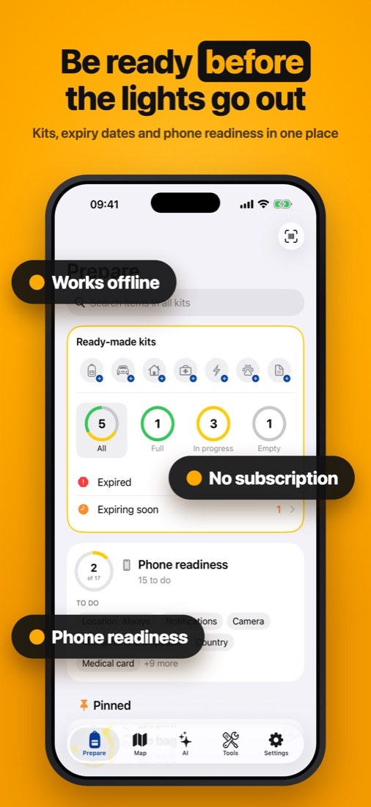
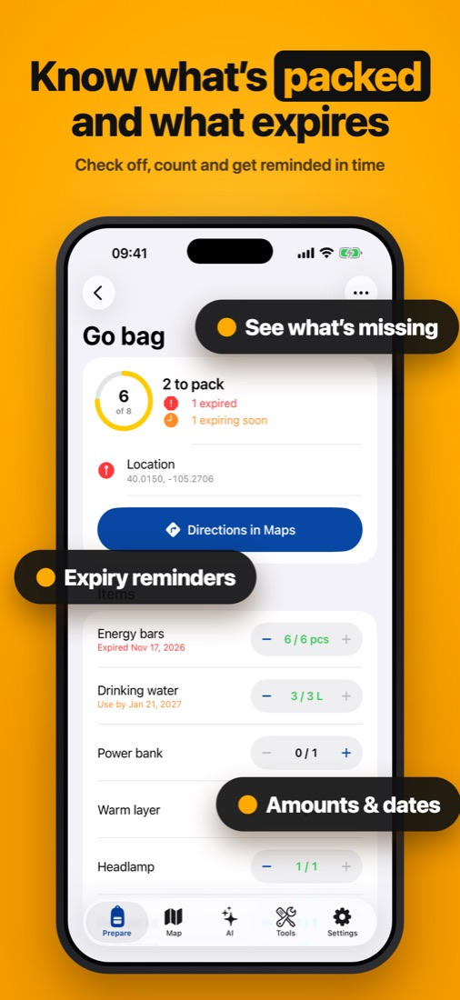
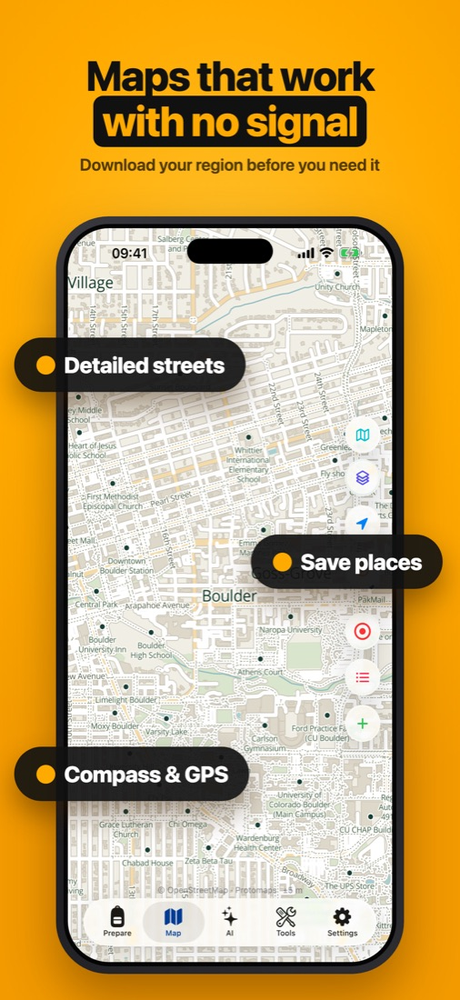
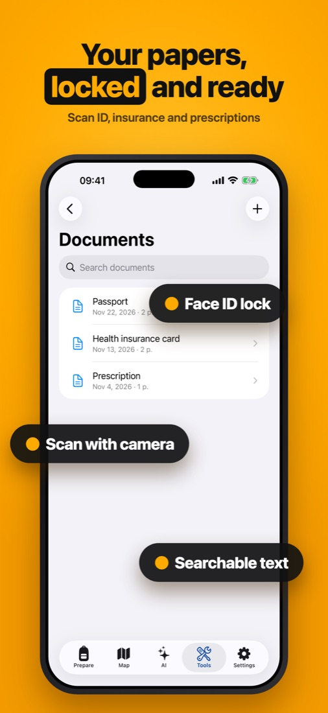
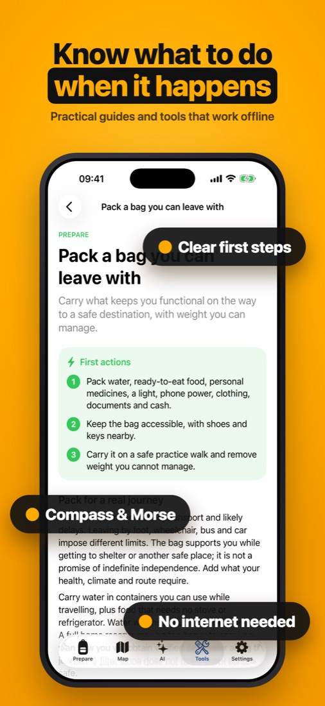

Talverik is not an emergency service. In an emergency, call your local emergency number. Guides and AI answers are general information, not professional advice. Maps are for orientation, not turn-by-turn navigation or complete hazard coverage. Requires iOS 26 or later.







Kits that keep count
Start from a ready-made go bag, home, car or first-aid kit, or build your own. Check off what you have and see what is missing.
Expiry watch
Add dates to food, water and batteries. Talverik reminds you before something runs out of date.
Documents
Scan your ID, insurance and prescriptions with the camera, or import PDFs, and lock them with Face ID.
Offline maps
Download your region in advance. Save places, record GPS tracks and follow them back with no signal.
Private AI
Ask questions and get answers on your iPhone without internet, after a one-time download of about 1.5 GB on a compatible iPhone. It can make mistakes.
Guides and tools
Practical guides for emergencies, the outdoors and living without services, plus a compass, coordinates, Morse light and sound.
Pay once. Yours to keep.
No subscription, no account, no ads. Talverik collects nothing about you. Back up to Files or iCloud Drive with an optional password.